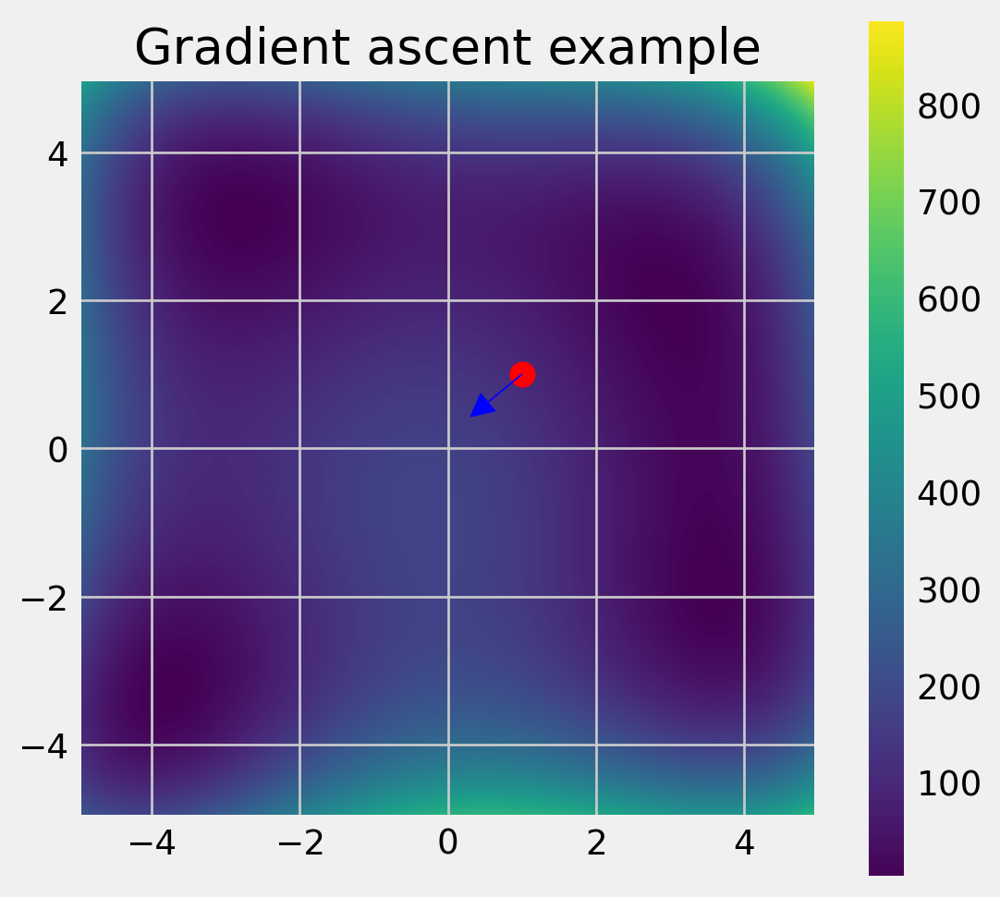
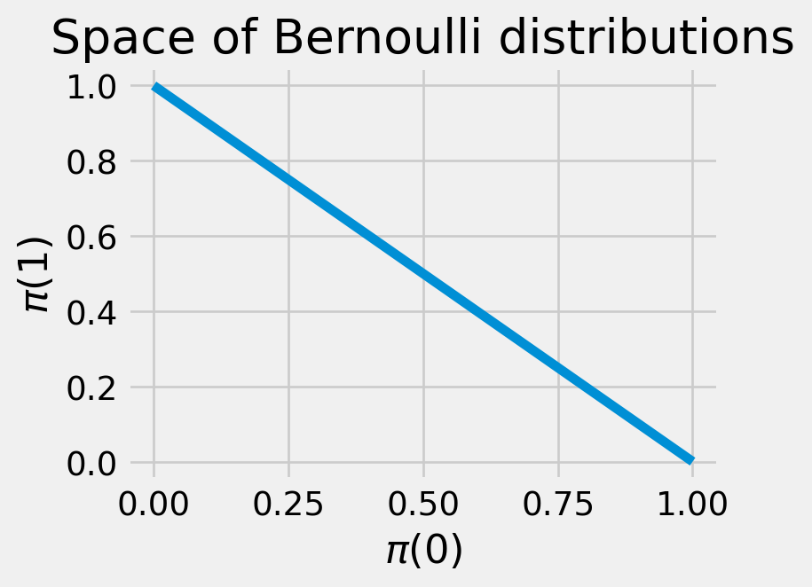

Code
%load_ext autoreload
%autoreload 2The core task of RL is finding the optimal policy in a given environment. This is essentially an optimization problem: out of some space of policies, we want to find the one that achieves the maximum total reward (in expectation).
It’s typically intractable to compute the optimal policy exactly in some finite number of steps. Instead, policy optimization algorithms start from some randomly initialized policy, and then improve it step by step. We’ve already seen some examples of these, namely Section 1.3.7.2 for finite MDPs and Section 2.6.4 in continuous control.
In particular, we often use policies that can be described by some finite set of parameters. We will see some examples in Section 6.3.1. For such parameterized policies, we can approximate the policy gradient: the gradient of the expected total reward with respect to the parameters. This tells us the direction the parameters should be updated to achieve a higher expected total reward. Policy gradient methods are responsible for groundbreaking applications including AlphaGo, OpenAI Five, and large language models, many of which use policies parameterized as deep neural networks.
%load_ext autoreload
%autoreload 2from utils import plt, Array, Float, Callable, jax, jnp, latex, gymYou may have previously heard of gradient descent for minimizing functions. Optimization problems are usually posed as minimization problems by convention. However, in RL, we usually talk about maximizing the expected total reward, and so we perform gradient ascent instead.
Gradient ascent is a general optimization algorithm for any differentiable function. A suitable analogy for this algorithm is hiking up a mountain, where you keep taking steps in the steepest direction upwards. Here, your vertical position \(y\) is the function being optimized, and your horizontal position \((x, z)\) is the input to the function. The slope of the mountain at your current position is given by the gradient, written \(\nabla y(x, z) \in \mathbb{R}^2\).
def f(x, y):
"""Himmelblau's function"""
return (x**2 + y - 11)**2 + (x + y**2 - 7)**2
# Create a grid of points
x = jnp.linspace(-5, 5, 400)
y = jnp.linspace(-5, 5, 400)
X, Y = jnp.meshgrid(x, y)
Z = f(X, Y)
fig, ax = plt.subplots(figsize=(6, 6))
img = ax.imshow(Z, extent=[-5, 5, -5, 5], origin='lower')
fig.colorbar(img, ax=ax)
tx, ty = 1.0, 1.0
gx, gy = jax.grad(f, argnums=(0, 1))(tx, ty)
ax.scatter(tx, ty, color='red', s=100)
ax.arrow(tx, ty, gx * 0.01, gy * 0.01, head_width=0.3, head_length=0.3, fc='blue', ec='blue')
ax.set_title("Gradient ascent example")
plt.show()
For differentiable functions, this can be thought of as the vector of partial derivatives,
\[ \nabla y(x, z) = \begin{pmatrix} \frac{\partial y}{\partial x} \\ \frac{\partial y}{\partial z} \end{pmatrix}. \]
To calculate the slope (aka “directional derivative”) of the mountain in a given direction \((\Delta x, \Delta z)\), you take the dot product of the difference vector with the gradient. This means that the direction with the highest slope is exactly the gradient itself, so we can describe the gradient ascent algorithm as follows:
Definition 6.1 (Gradient ascent) \[ \begin{pmatrix} x^{k+1} \\ z^{k+1} \end{pmatrix} = \begin{pmatrix} x^{k} \\ z^{k} \end{pmatrix} + \eta \nabla y(x^{k}, z^{k}) \]
where \(k\) denotes the iteration of the algorithm and \(\eta > 0\) is a “step size” hyperparameter that controls the size of the steps we take. (Note that we could also vary the step size across iterations, that is, \(\eta^0, \dots, \eta^K\).)
The case of a two-dimensional input is easy to visualize. But this idea can be straightforwardly extended to higher-dimensional inputs.
From now on, we’ll use \(J\) to denote the function we’re trying to maximize, and \(\theta\) to denote the parameters being optimized over. (In the above example, \(\theta = \begin{pmatrix} x & z \end{pmatrix}^\top\)).
Notice that our parameters will stop changing once \(\nabla J(\theta) = 0.\) Once we reach this stationary point, our current parameters are ‘locally optimal’ in some sense; it’s impossible to increase the function by moving in any direction. If \(J\) is convex, then the only point where this happens is at the global optimum. Otherwise, if \(J\) is nonconvex, the best we can hope for is a local optimum.
How does a computer compute the gradient of a function?
One way is symbolic differentiation, which is similar to the way you might compute it by hand: the computer applies a list of rules to transform the symbols involved. Python’s sympy package supports symbolic differentiation. However, functions implemented in code may not always have a straightforward symbolic representation.
Another way is numerical differentiation, which is based on the limit definition of a (directional) derivative:
\[ \nabla_{\boldsymbol{u}} J(\boldsymbol{x}) = \lim_{\varepsilon \to 0} \frac{J(\boldsymbol{x} + \varepsilon \boldsymbol{u}) - J(\boldsymbol{x})}{\varepsilon} \]
Then, we can substitute a small value of \(\varepsilon\) on the r.h.s. to approximate the directional derivative. How small, though? If we need an accurate estimate, we may need such a small value of \(\varepsilon\) that typical computers will run into rounding errors. Also, to compute the full gradient, we would need to compute the r.h.s. once for each input dimension. This is an issue if computing \(J\) is expensive.
Automatic differentiation achieves the best of both worlds. Like symbolic differentiation, we manually implement the derivative rules for a few basic operations. However, instead of executing these on the symbols, we execute them on the values when the function gets called, like in numerical differentiation. This allows us to differentiate through programming constructs such as branches or loops, and doesn’t involve any arbitrarily small values. Baydin et al. (2018) provides an accessible survey of automatic differentiation.
In real applications, computing the gradient of the target function is not so simple. As an example from supervised learning, \(J(\theta)\) might be the sum of squared prediction errors across an entire training dataset. However, if our dataset is very large, it might not fit into our computer’s memory! Typically in these cases, we compute some estimate of the gradient at each step, and walk in that direction instead. This is called stochastic gradient ascent. In the SL example above, we might randomly choose a minibatch of samples and use them to estimate the true prediction error. (This approach is known as minibatch SGD.)
def sgd(
theta_init: Float[Array, " D"],
estimate_gradient: Callable[[Float[Array, " D"]], Float[Array, " D"]],
eta: float,
n_steps: int,
):
# Perform `n_steps` steps of SGD.
# `estimate_gradient` eats the current parameters and returns an estimate of the objective function's gradient at those parameters.
theta = theta_init
for step in range(n_steps):
theta += eta * estimate_gradient(theta)
return theta
latex(sgd)What makes one gradient estimator better than another? Ideally, we want this estimator to be unbiased; that is, on average, it matches a single true gradient step:
\[ \mathbb{E}[\tilde \nabla J(\theta)] = \nabla J(\theta). \]
We also want the variance of the estimator to be low so that its performance doesn’t change drastically at each step.
We can actually show that, for many “nice” functions, in a finite number of steps, SGD will find a \(\theta\) that is “close” to a stationary point. In another perspective, for such functions, the local “landscape” of \(J\) around \(\theta\) becomes flatter and flatter the longer we run SGD.
More formally, suppose we run SGD for \(K\) steps, using an unbiased gradient estimator. Let the step size \(\eta^k\) scale as \(O(1/\sqrt{k}).\) Then if \(J\) is bounded and \(\beta\)-smooth (see below), and the norm of the gradient estimator has a bounded second moment \(\sigma^2,\)
\[ \|\nabla J(\theta^K)\|^2 \le O \left( M \beta \sigma^2 / K\right). \]
We call a function \(\beta\)-smooth if its gradient is Lipschitz continuous with constant \(\beta\):
\[ \|\nabla J(\theta) - \nabla J(\theta')\| \le \beta \|\theta - \theta'\|. \]
We’ll now see a concrete application of gradient ascent in the context of policy optimization.
Remember that in RL, the primary goal is to find the optimal policy that achieves the maximimum total reward, which we can express using Definition 1.5:
\[ \begin{aligned} J(\pi) := \mathbb{E}_{s_0 \sim \mu_0} V^{\pi} (s_0) = & \mathbb{E}_{\tau \sim \rho^\pi} \sum_{h=0}^{H-1} r(s_h, a_h) \end{aligned} \tag{6.1}\]
where \(\rho^\pi\) is the distribution over trajectories induced by \(\pi\) (see Equation 1.1).
(Note that we’ll continue to work in the undiscounted, finite-horizon case. Analogous results hold for the discounted, infinite-horizon setup.)
As shown by the notation, this is exactly the function \(J\) that we want to maximize using gradient ascent. What variables are we optimizing over in this problem? Well, the objective function \(J\) is a function of the policy \(\pi\), but in general, \(\pi\) is a function, and optimizing over the entire space of arbitrary input-output mappings would be intractable. Instead, we need to describe \(\pi\) in terms of some finite set of parameters \(\theta\).
What are some ways we could parameterize our policy?
Example 6.1 (Tabular representation) If both the state and action spaces are finite, perhaps we could simply learn a preference value \(\theta_{s,a}\) for each state-action pair. Then to turn this into a valid distribution, we perform a softmax operation: we exponentiate each of them, and then normalize to form a valid distribution.
\[ \pi^\text{softmax}_\theta(a | s) = \frac{\exp(\theta_{s,a})}{\sum_{s,a'} \exp (\theta_{s,a'})}. \]
However, this doesn’t make use of any structure in the states or actions, so while this is flexible, it is also prone to overfitting.
Example 6.2 (Linear in features) Another approach is to map each state-action pair into some feature space \(\phi(s, a) \in \mathbb{R}^p\). Then, to map a feature vector to a probability, we take a linear combination of the features and take a softmax:
\[ \pi^\text{linear in features}_{\theta}(a|s) = \frac{\exp(\theta^\top \phi(s, a))}{\sum_{a'} \exp(\theta^\top \phi(s, a'))}. \]
Another interpretation is that \(\theta\) represents the feature vector of the “desired” state-action pair, as state-action pairs whose features align closely with \(\theta\) are given higher probability.
Example 6.3 (Neural policies) More generally, we could map states and actions to unnormalized scores via some parameterized function \(f_\theta : \mathcal{S} \times \mathcal{A} \to \mathbb{R},\) such as a neural network, and choose actions according to a softmax:
\[ \pi^\text{general}_\theta(a|s) = \frac{\exp(f_{\theta}(s,a))}{\sum_{a'} \exp(f_{\theta}(s,a'))}. \]
Example 6.4 (Diagonal Gaussian policies for continuous action spaces) Consider a continuous \(n\)-dimensional action space \(\mathcal{A} = \mathbb{R}^n\). Then for a stochastic policy, we could use a function to predict the mean action and then add some random noise about it. For example, we could use a neural network to predict the mean action \(\mu_\theta(s)\) and then add some noise \(\epsilon \sim \mathcal{N}(0, \sigma^2 I)\) to it:
\[ \pi_\theta(a|s) = \mathcal{N}(\mu_\theta(s), \sigma^2 I). \]
Now that we have seen some examples of parameterized policies, we will write the total reward in terms of the parameters, overloading notation and letting \(\rho_\theta := \rho^{\pi_\theta}\):
\[ J(\theta) = \mathbb{E}_{\tau \sim \rho_\theta} R(\tau) \]
where \(R(\tau) = \sum_{h=0}^{H-1} r(s_h, a_h)\) denotes the total reward in the trajectory.
Now how do we maximize this function (the expected total reward) over the parameters? One simple idea would be to directly apply gradient ascent:
\[ \theta^{k+1} = \theta^k + \eta \nabla J(\theta^k). \]
In order to apply this technique, we need to be able to evaluate the gradient \(\nabla J(\theta).\) But \(J(\theta)\) is very difficult, or even intractable, to compute exactly, since it involves taking an expectation over all possible trajectories \(\tau.\) Can we rewrite it in a form that’s more convenient to implement?
There is a general trick called importance sampling for evaluating difficult expectations. Suppose we want to estimate \(\mathbb{E}_{x \sim p}[f(x)]\) where \(p\) is hard or expensive to sample from, but easy to evaluate the likelihood \(p(x)\) of. Suppose that we can easily sample from a different distribution \(q\). Since an expectation is just a weighted average, we can sample \(x\) from \(q\), compute \(f(x)\), and then reweight the results: if \(x\) is very likely under \(p\) but unlikely under \(q\), we should boost its weighting, and if it is common under \(q\) but uncommon under \(p\), we should lower its weighting. The reweighting factor is exactly the likelihood ratio between the target distribution \(p\) and the sampling distribution \(q\):
\[ \mathbb{E}_{x \sim p}[f(x)] = \sum_{x \in \mathcal{X}} f(x) p(x) = \sum_{x \in \mathcal{X}} f(x) \frac{p(x)}{q(x)} q(x) = \mathbb{E}_{x \sim q} \left[ \frac{p(x)}{q(x)} f(x) \right]. \]
Doesn’t this seem too good to be true? If there were no drawbacks, we could use this to estimate any expectation of any function on any arbitrary distribution! The drawback is that the variance may be very large due to the likelihood ratio term. If there are values of \(x\) that are very rare in the sampling distribution \(q\), but common under \(p\), then the likelihood ratio \(p(x)/q(x)\) will cause the variance to blow up.
Returning to RL, suppose there is some trajectory distribution \(\rho(\tau)\) that is easy to sample from, such as a database of existing trajectories. We can then rewrite \(\nabla J(\theta)\), a.k.a. the policy gradient, as follows. All gradients are being taken with respect to \(\theta\).
\[ \begin{aligned} \nabla J(\theta) & = \nabla \mathbb{E}_{\tau \sim \rho_\theta} [ R(\tau) ] \\ & = \nabla \mathbb{E}_{\tau \sim \rho} \left[ \frac{\rho_\theta(\tau)}{\rho(\tau)} R(\tau) \right] & & \text{likelihood ratio trick} \\ & = \mathbb{E}_{\tau \sim \rho} \left[ \frac{\nabla \rho_\theta(\tau)}{\rho(\tau)} R(\tau) \right] & & \text{switching gradient and expectation} \end{aligned} \]
Note that for \(\rho = \rho_\theta\), the inside term becomes
\[ \nabla J(\theta) = \mathbb{E}_{\tau \sim \rho_\theta} [ \nabla \log \rho_\theta(\tau) \cdot R(\tau)]. \]
(The order of operations is \(\nabla (\log \rho_\theta)(\tau)\).)
Recall that when the state transitions are Markov (i.e. \(s_{t}\) only depends on \(s_{t-1}, a_{t-1}\)) and the policy is time-homogeneous (i.e. \(a_h\sim \pi_\theta (s_h)\)), we can write out the likelihood of a trajectory under the policy \(\pi_\theta\) autoregressively, as in Equation 1.1. Taking the log of the trajectory likelihood turns it into a sum of terms:
\[ \log \rho_\theta(\tau) = \log \mu(s_0) + \sum_{h=0}^{H-1} \log \pi_\theta(a_h\mid s_h) + \log P(s_{h+1} \mid s_h, a_h) \]
When we take the gradient with respect to the parameters \(\theta\), only the \(\pi_\theta(a_h| s_h)\) terms depend on \(\theta\). This gives the following expression for the policy gradient, known as the “REINFORCE” policy gradient Williams (1992):
\[ \begin{aligned} \nabla J(\theta) = \mathbb{E}_{\tau \sim \rho_\theta} \left[ \sum_{h=0}^{H-1} \nabla_\theta \log \pi_{\theta}(a_h| s_h) R(\tau) \right] \end{aligned} \tag{6.2}\]
This expression allows us to estimate the gradient by sampling a few sample trajectories from \(\pi_\theta,\) calculating the likelihoods of the chosen actions, and substituting these into the expression inside the brackets of Equation 6.2. Then we can update the parameters \(\theta\) in this direction to perform stochastic gradient ascent.
The rest of this chapter investigates ways to reduce the variance of this estimator by subtracting off certain correlated quantities.
Lemma 6.1 (Intuition behind REINFORCE) Intuitively speaking, we want to update the policy parameters to maximize the probability of taking optimal actions. That is, suppose we are in state \(s\), and \(a^\star\) is an optimal action to take. Then we want to solve \(\theta = \arg\max_{\theta'} \pi_{\theta'}(a^\star \mid s)\), which would lead to the gradient ascent expression
\[ \theta \gets \theta + \nabla \pi_{\theta}(a^\star \mid s). \]
However, we don’t know the optimal action \(a^\star\) in practice. So instead, we must try many actions, and increase the probability of the “good” ones and decrease the probability of the “bad” ones. Suppose \(A(s, a)\) is a measure of how good action \(a\) is in state \(s\). Then we could write
\[ \theta \gets \theta + \sum_a \pi_{\theta}(a \mid s) A(s, a) \nabla \pi_{\theta}(a \mid s). \]
But this has an issue: the size of each step doesn’t just depend on how good it is, but also how often the policy takes it already. This could lead to a positive feedback loop where likely actions become more and more likely, without respect to the quality of the action. So we divide by the likelihood to cancel out this factor:
\[ \theta \gets \theta + \sum_a \pi_{\theta}(a \mid s) A(s, a) \frac{\nabla \pi_{\theta}(a \mid s)}{\pi_{\theta}(a \mid s)}. \]
But once we simplify, and sum across timesteps, this becomes almost exactly the gradient written above!
\[ \theta \gets \theta + \mathbb{E}_{a \sim \pi_{\theta}(\cdot \mid s)} [\sum_{h=0}^{H-1} A(s_h, a_h) \nabla \log \pi_{\theta}(a_h\mid s_h) ]. \]
We will see later on what \(A\) concretely corresponds to.
def estimate_gradient_reinforce_pseudocode(env: gym.Env, pi, theta: Float[Array, " D"]):
"""Estimate the policy gradient using REINFORCE."""
tau = sample_trajectory(env, pi(theta))
nabla_hat = jnp.zeros_like(theta)
total_reward = sum(r for _s, _a, r in tau)
for s, a, r in tau:
def policy_log_likelihood(theta: Float[Array, " D"]) -> float:
return log(pi(theta)(s, a))
nabla_hat += jax.grad(policy_log_likelihood)(theta) * total_reward
return nabla_hat
latex(estimate_gradient_reinforce_pseudocode, id_to_latex={"jax.grad": r"\nabla"})For some intuition into how this method works, recall that we update our parameters according to
\[ \begin{aligned} \theta_{t+1} &= \theta_t + \eta \nabla J(\theta_t) \\ &= \theta_t + \eta \mathbb{E}_{\tau \sim \rho_{\theta_t}} [\nabla \log \rho_{\theta_t}(\tau) \cdot R(\tau)]. \end{aligned} \]
Consider the “good” trajectories where \(R(\tau)\) is large. Then \(\theta\) gets updated so that these trajectories become more likely. To see why, recall that \(\rho_{\theta}(\tau)\) is the likelihood of the trajectory \(\tau\) under the policy \(\pi_\theta,\) so the gradient points in the direction that makes \(\tau\) more likely.
A central idea from supervised learning is the bias-variance decomposition, which shows that the mean squared error of an estimator is the sum of its squared bias and its variance. The REINFORCE gradient estimator Equation 6.2 is already unbiased, meaning that its expectation over trajectories is the true policy gradient. Can we find ways to reduce its variance as well?
As a first step, consider that the action taken at step \(t\) does not affect the reward from previous timesteps, since they’re already in the past. You can also show rigorously that this is the case, and that we only need to consider the present and future rewards to calculate the policy gradient:
\[ \nabla J(\theta) = \mathbb{E}_{\tau \sim \rho_\theta} \left[ \sum_{h=0}^{H-1} \nabla_\theta \log \pi_{\theta}(a_h| s_h) \sum_{h' = h}^{H-1} r(s_{h'}, a_{h'}) \right] \]
Furthermore, by a conditioning argument, we can replace the inner sum over remaining rewards with the policy’s Q-function, evaluated at the current state:
\[ \nabla J(\theta) = \mathbb{E}_{\tau \sim \rho_\theta} \left[ \sum_{h=0}^{H-1} \nabla_\theta \log \pi_{\theta}(a_h| s_h) Q^{\pi_\theta}(s_{h}, a_{h}) \right] \tag{6.3}\]
Exercise: Prove that this is equivalent to the previous definitions. What modification to the expression must be made for the discounted, infinite-horizon setting?
We can further reduce variance by subtracting a baseline function \(b_h: \mathcal{S} \to \mathbb{R}\) at each timestep \(h\). This modifies the policy gradient as follows:
\[ \nabla J(\theta) = \mathbb{E}_{\tau \sim \rho_\theta} \left[ \sum_{h=0}^{H-1} \nabla \log \pi_\theta (a_h| s_h) \left( Q^{\pi_\theta}(s_h, a_h) - b_h(s_h) \right) \right]. \tag{6.4}\]
(Again, you should try to prove that this equality still holds.) For example, we might want \(b_h\) to estimate the average reward-to-go at a given timestep:
\[ b_h^\theta = \mathbb{E}_{\tau \sim \rho_\theta} R_h(\tau). \]
As a better baseline, we could instead choose the value function. Note that the random variable \(Q^\pi_h(s, a) - V^\pi_h(s),\) where the randomness is taken over the actions, is centered around zero. (Recall \(V^\pi_h(s) = \mathbb{E}_{a \sim \pi} Q^\pi_h(s, a).\)) This quantity matches the intuition given in Lemma 6.1: it is positive for actions that are better than average (in state \(s\)), and negative for actions that are worse than average. In fact, this quantity has a particular name: the advantage function.
Definition 6.2 (Advantage function) \[ A^\pi_h(s, a) = Q^\pi_h(s, a) - V^\pi_h(s) \]
This measures how much better this action does than the average for that policy. (Note that for an optimal policy \(\pi^\star,\) the advantage of a given state-action pair is always zero or negative.)
We can now express the policy gradient as follows. Note that the advantage function effectively replaces the \(Q\)-function from Equation 6.3:
\[ \nabla J(\theta) = \mathbb{E}_{\tau \sim \rho_\theta} \left[ \sum_{h=0}^{H-1} \nabla \log \pi_\theta(a_h| s_h) A^{\pi_\theta}_h(s_h, a_h) \right]. \tag{6.5}\]
Example 6.5 (Policy gradient for the linear-in-features parameterization) The gradient-log-likelihood for the linear-in-features parameterization Example 6.2 is also quite elegant:
\[ \begin{aligned} \nabla \log \pi_\theta(a|s) &= \nabla \left( \theta^\top \phi(s, a) - \log \left( \sum_{a'} \exp(\theta^\top \phi(s, a')) \right) \right) \\ &= \phi(s, a) - \mathbb{E}_{a' \sim \pi_\theta(s)} \phi(s, a') \end{aligned} \]
Plugging this into our policy gradient expression, we get
\[ \begin{aligned} \nabla J(\theta) & = \mathbb{E}_{\tau \sim \rho_\theta} \left[ \sum_{t=0}^{T-1} \nabla \log \pi_\theta(a_h| s_h) A_h^{\pi_\theta} \right] \\ & = \mathbb{E}_{\tau \sim \rho_\theta} \left[ \sum_{t=0}^{T-1} \left( \phi(s_h, a_h) - \mathbb{E}_{a' \sim \pi(s_h)} \phi(s_h, a') \right) A_h^{\pi_\theta}(s_h, a_h) \right] \\ & = \mathbb{E}_{\tau \sim \rho_\theta} \left[ \sum_{t=0}^{T-1} \phi(s_h, a_h) A_h^{\pi_\theta} (s_h, a_h) \right] \end{aligned} \]
Why can we drop the \(\mathbb{E}\phi(s_h, a')\) term? By linearity of expectation, consider the dropped term at a single timestep: \(\mathbb{E}_{\tau \sim \rho_\theta} \left[ \left( \mathbb{E}_{a' \sim \pi(s_h)} \phi(s, a') \right) A_h^{\pi_\theta}(s_h, a_h) \right].\) By Adam’s Law, we can wrap the advantage term in a conditional expectation on the state \(s_h.\) Then we already know that \(\mathbb{E}_{a \sim \pi(s)} A_h^{\pi}(s, a) = 0,\) and so this entire term vanishes.
Note that to avoid correlations between the gradient estimator and the value estimator (i.e. baseline), we must estimate them with independently sampled trajectories:
def pg_with_learned_baseline(env: gym.Env, pi, eta: float, theta_init, K: int, N: int) -> Float[Array, " D"]:
theta = theta_init
for k in range(K):
trajectories = sample_trajectories(env, pi(theta), N)
V_hat = fit_value(trajectories)
tau = sample_trajectories(env, pi(theta), 1)
nabla_hat = jnp.zeros_like(theta) # gradient estimator
for h, (s, a) in enumerate(tau):
def log_likelihood(theta_opt):
return jnp.log(pi(theta_opt)(s, a))
nabla_hat = nabla_hat + jax.grad(log_likelihood)(theta) * (return_to_go(tau, h) - V_hat(s))
theta = theta + eta * nabla_hat
return theta
latex(pg_with_learned_baseline)Note that you could also generalize this by allowing the learning rate \(\eta\) to vary across steps, or take multiple trajectories \(\tau\) and compute the sample average of the gradient estimates.
The baseline estimation step fit_value can be done using any appropriate supervised learning algorithm. Note that the gradient estimator will be unbiased regardless of the baseline.
What advantages does the policy gradient algorithm have over the policy iteration algorithms covered in Section 1.3.7.2?
Remark 6.1 (Policy iteration review). Recall that policy iteration is an algorithm for MDPs with unknown state transitions where we alternate between these two steps:
To analyze the difference between them, we’ll make use of the performance difference lemma, which provides an expression for comparing the difference between two value functions.
Theorem 6.1 (Performance difference lemma) Suppose Alice is playing a game (an MDP). Bob is spectating, and can evaluate how good an action is compared to his own strategy. (That is, Bob can compute his advantage function \(A_h^{\text{Bob}}(s_h, a_h)\)). The performance difference lemma says that Bob can now calculate exactly how much better or worse he is than Alice as follows:
\[ V_0^{\text{Alice}}(s) - V_0^{\text{Bob}}(s) = \mathbb{E}_{\tau \sim \rho_{\text{Alice}, s}} \left[ \sum_{h=0}^{H-1} A_h^{\text{Bob}} (s_h, a_h) \right] \tag{6.6}\]
where \(\rho_{\text{Alice}, s}\) denotes the distribution over trajectories starting in state \(s\) when Alice is playing.
To see why, consider a specific step \(h\) in the trajectory. We compute how much better actions from Bob are than the actions from Alice, on average. But this is exactly the average Bob-advantage across actions from Alice, as described in the PDL!
Formally, this corresponds to a nice telescoping simplification when we expand out the definition of the advantage function. Note that
\[ \begin{aligned} A^\pi_h(s_h, a_h) &= Q^\pi_h(s_h, a_h) - V^\pi_h(s_h) \\ &= r_h(s_h, a_h) + \mathbb{E}_{s_{h+1} \sim P(s_h, a_h)} [V^\pi_{h+1}(s_{h+1})] - V^\pi_h(s_h) \end{aligned} \]
so expanding out the r.h.s. expression of Equation 6.6 and grouping terms together gives
\[ \begin{aligned} \mathbb{E}_{\tau \sim \rho_{\text{Alice}, s}} \left[ \sum_{h=0}^{H-1} A_h^{\text{Bob}} (s_h, a_h) \right] &= \mathbb{E}_{\tau \sim \rho_{\text{Alice}, s}} \left[ \left( \sum_{h=0}^{H-1} r_h(s_h, a_h) \right) + \left( V^{\text{Bob}}_1(s_1) + \cdots + V^{\text{Bob}}_H(s_H) \right) - \left( V^{\text{Bob}_0}(s_0) + \cdots + V^{\text{Bob}}_{H-1}(s_{H-1}) \right) \right] \\ &= V^{\text{Alice}}_0(s) - V^{\text{Bob}}_0(s) \end{aligned} \]
as desired. (Note that the “inner” expectation from expanding the advantage function has the same distribution as the outer one, so omitting it here is valid.)
The PDL gives insight into why fitted approaches such as PI don’t work as well in the “full” RL setting. To see why, let’s consider a single iteration of policy iteration, where policy \(\pi\) gets updated to \(\tilde \pi\). We’ll assume these policies are deterministic. Suppose the new policy \(\tilde \pi\) chooses some action with a negative advantage with respect to \(\pi\). That is, when acting according to \(\pi\), taking the action from \(\tilde \pi\) would perform worse than expected. Define \(\Delta_\infty\) to be the most negative advantage, that is, \(\Delta_\infty = \min_{s \in \mathcal{S}} A^{\pi}_h(s, \tilde \pi(s))\). Plugging this into the Theorem 6.1 gives
\[ \begin{aligned} V_0^{\tilde \pi}(s) - V_0^{\pi}(s) &= \mathbb{E}_{\tau \sim \rho_{\tilde \pi, s}} \left[ \sum_{h=0}^{H-1} A_h^{\pi}(s_h, a_h) \right] \\ &\ge H \Delta_\infty \\ V_0^{\tilde \pi}(s) &\ge V_0^{\pi}(s) - H|\Delta_\infty|. \end{aligned} \]
That is, for some state \(s\), the lower bound on the performance of \(\tilde \pi\) is lower than the performance of \(\pi\). This doesn’t state that \(\tilde \pi\) will necessarily perform worse than \(\pi\), only suggests that it might be possible. If these worst case states do exist, though, PI does not avoid situations where the new policy often visits them; It does not enforce that the trajectory distributions \(\rho_\pi\) and \(\rho_{\tilde \pi}\) be close to each other. In other words, the “training distribution” that our prediction rule is fitted on, \(\rho_\pi\), may differ significantly from the “evaluation distribution” \(\rho_{\tilde \pi}\).
On the other hand, policy gradient methods do, albeit implicitly, encourage \(\rho_\pi\) and \(\rho_{\tilde \pi}\) to be similar. Suppose that the mapping from policy parameters to trajectory distributions is relatively smooth. Then, by adjusting the parameters only a small distance, the new policy will also have a similar trajectory distribution. But this is not very rigorous, and in practice the parameter-to-distribution mapping may not be so smooth. Can we constrain the distance between the resulting distributions more explicitly?
This brings us to the next three methods: - trust region policy optimization (TRPO), which explicitly constrains the difference between the distributions before and after each step; - the natural policy gradient (NPG), a first-order approximation of TRPO; - proximal policy optimization (PPO), a “soft relaxation” of TRPO.
We saw above that policy gradient methods are effective because they implicitly constrain how much the policy changes at each iteration. Can we design an algorithm that explicitly constrains the “step size”? That is, we want to improve the policy as much as possible, measured in terms of the r.h.s. of the Theorem 6.1, while ensuring that its trajectory distribution does not change too much:
\[ \begin{aligned} \theta^{k+1} &\gets \arg\max_{\theta^{\text{opt}}} \mathbb{E}_{s_0, \dots, s_{H-1} \sim \pi^{k}} \left[ \sum_{h=0}^{H-1} \mathbb{E}_{a_h\sim \pi^{\theta^\text{opt}}(s_h)} A^{\pi^{k}}(s_h, a_h) \right] \\ & \text{where } \text{distance}(\rho_{\theta^{\text{opt}}}, \rho_{\theta^k}) < \delta \end{aligned} \]
Note that we have made a small change to the r.h.s. expression: we use the states sampled from the old policy, and only use the actions from the new policy. It would be computationally infeasible to sample entire trajectories from \(\pi_\theta\) as we are optimizing over \(\theta\). On the other hand, if \(\pi_\theta\) returns a vector representing a probability distribution over actions, then evaluating the expected advantage with respect to this distribution only requires taking a dot product. This approximation also matches the r.h.s. of the PDL to first order in \(\theta\). (We will elaborate more on this later.)
How do we describe the distance between \(\rho_{\theta^{\text{opt}}}\) and \(\rho_{\theta^k}\)? We’ll use the Kullback-Leibler divergence (KLD):
Definition 6.3 (Kullback-Leibler divergence) For two PDFs \(p, q\),
\[ \mathrm{KL}\left(p\parallel q\right) := \mathbb{E}_{x \sim p} \left[ \log \frac{p(x)}{q(x)} \right] \]
This can be interpreted in many different ways, many stemming from information theory. One such interpretation is that \(\mathrm{KL}\left(p\parallel q\right)\) describes my average “surprise” if I think data is being generated by \(q\) but it’s actually generated by \(p\). (The surprise of an event with probability \(p\) is \(- \log_2 p\).) Note that \(\mathrm{KL}\left(p\parallel q\right) = 0\) if and only if \(p = q\). Also note that it is generally not symmetric.
Both the objective function and the KLD constraint involve a weighted average over the space of all trajectories. This is intractable in general, so we need to estimate the expectation. As before, we can do this by taking an empirical average over samples from the trajectory distribution. This gives us the following pseudocode:
def kl_div_trajectories(pi, theta_1, theta_2, trajectories):
# Assume trajectories are sampled from pi(theta_1)
kl_div = 0
for tau in trajectories:
for s, a, _r in tau:
kl_div += jnp.log(pi(theta_1)(s, a)) - jnp.log(pi(theta_2)(s, a))
return kl_div / len(trajectories)
latex(kl_div_trajectories)def trpo(env, δ, theta_init, n_interactions):
theta = theta_init
for k in range(K):
trajectories = sample_trajectories(env, pi(theta), n_interactions)
A_hat = fit_advantage(trajectories)
def approximate_gain(theta_opt):
A_total = 0
for tau in trajectories:
for s, _a, _r in tau:
for a in env.action_space:
A_total += pi(theta)(s, a) * A_hat(s, a)
return A_total
def constraint(theta_opt):
return kl_div_trajectories(pi, theta, theta_opt, trajectories) <= δ
theta = optimize(approximate_gain, constraint)
return theta
latex(trpo)The above isn’t entirely complete: we still need to solve the actual optimization problem at each step. Unless we know additional properties of the problem, this might be an intractable optimization. Do we need to solve it exactly, though? Instead, if we assume that both the objective function and the constraint are somewhat smooth in terms of the policy parameters, we can use their Taylor expansions to give us a simpler optimization problem with a closed-form solution. This brings us to the natural policy gradient algorithm.
We take a linear (first-order) approximation to the objective function and a quadratic (second-order) approximation to the KL divergence constraint about the current estimate \(\theta^k\). This results in the optimization problem
\[ \begin{gathered} \max_\theta \nabla_\theta J(\pi_{\theta^k})^\top (\theta - \theta^k) \\ \text{where } \frac{1}{2} (\theta - \theta^k)^\top F_{\theta^k} (\theta - \theta^k) \le \delta \end{gathered} \tag{6.7}\]
where \(F_{\theta^k}\) is the Fisher information matrix defined below.
Definition 6.4 (Fisher information matrix) Let \(p_\theta\) denote a parameterized distribution. Its Fisher information matrix \(F_\theta\) can be defined equivalently as:
\[ \begin{aligned} F_{\theta} & = \mathbb{E}_{x \sim p_\theta} \left[ (\nabla_\theta \log p_\theta(x)) (\nabla_\theta \log p_\theta(x))^\top \right] & \text{covariance matrix of the Fisher score} \\ & = \mathbb{E}_{x \sim p_{\theta}} [- \nabla_\theta^2 \log p_\theta(x)] & \text{average Hessian of the negative log-likelihood} \end{aligned} \]
Recall that the Hessian of a function describes its curvature: for a vector \(\delta \in \Theta\), the quantity \(\delta^\top F_\theta \delta\) describes how rapidly the negative log-likelihood changes if we move by \(\delta\). The Fisher information matrix is precisely the Hessian of the KL divergence (with respect to either one of the parameters).
In particular, when \(p_\theta = \rho_{\theta}\) denotes a trajectory distribution, we can further simplify the expression:
\[ F_{\theta} = \mathbb{E}_{\tau \sim \rho_\theta} \left[ \sum_{h=0}^{H-1} (\nabla \log \pi_\theta (a_h\mid s_h)) (\nabla \log \pi_\theta(a_h\mid s_h))^\top \right] \tag{6.8}\]
Note that we’ve used the Markov property to cancel out the cross terms corresponding to two different time steps.
This is a convex optimization problem with a closed-form solution. To see why, it helps to visualize the case where \(\theta\) is two-dimensional: the constraint describes the inside of an ellipse, and the objective function is linear, so we can find the extreme point on the boundary of the ellipse. We recommend Boyd and Vandenberghe (2004) for a comprehensive treatment of convex optimization.
More generally, for a higher-dimensional \(\theta\), we can compute the global optima by setting the gradient of the Lagrangian to zero:
\[ \begin{aligned} \mathcal{L}(\theta, \alpha) & = \nabla J(\pi_{\theta^k})^\top (\theta - \theta^k) - \alpha \left[ \frac{1}{2} (\theta - \theta^k)^\top F_{\theta^k} (\theta - \theta^k) - \delta \right] \\ \nabla \mathcal{L}(\theta^{k+1}, \alpha) & := 0 \\ \implies \nabla J(\pi_{\theta^k}) & = \alpha F_{\theta^k} (\theta^{k+1} - \theta^k) \\ \theta^{k+1} & = \theta^k + \eta F_{\theta^k}^{-1} \nabla J(\pi_{\theta^k}) \\ \text{where } \eta & = \sqrt{\frac{2 \delta}{\nabla J(\pi_{\theta^k})^\top F_{\theta^k}^{-1} \nabla J(\pi_{\theta^k})}} \end{aligned} \]
This gives us the closed-form update. Now the only challenge is to estimate the Fisher information matrix, since, as with the KL divergence constraint, it is an expectation over trajectories, and computing it exactly is therefore typically intractable.
Definition 6.5 (Natural policy gradient) How many trajectory samples do we need to accurately estimate the Fisher information matrix? As a rule of thumb, the sample complexity should scale with the dimension of the parameter space. This makes this approach intractable in the deep learning setting where we might have a very large number of parameters.
As you can see, the NPG is the “basic” policy gradient algorithm we saw above, but with the gradient transformed by the inverse Fisher information matrix. This matrix can be understood as accounting for the geometry of the parameter space. The typical gradient descent algorithm implicitly measures distances between parameters using the typical Euclidean distance. Here, where the parameters map to a distribution, using the natural gradient update is equivalent to optimizing over distribution space rather than parameter space, where distance between distributions is measured by the Definition 6.3.
Example 6.6 (Natural gradient on a simple problem) Let’s step away from RL and consider the following optimization problem over Bernoulli distributions \(\pi \in \Delta(\{ 0, 1 \})\):
\[ \begin{aligned} J(\pi) & = 100 \cdot \pi(1) + 1 \cdot \pi(0) \end{aligned} \]
We can think of the space of such distributions as the line between \((0, 1)\) to \((1, 0)\) on the Cartesian plane:
x = jnp.linspace(0, 1, 50)
y = 1 - x
plt.plot(x, y)
plt.xlabel(r"$\pi(0)$")
plt.ylabel(r"$\pi(1)$")
plt.title("Space of Bernoulli distributions")
plt.show()
Clearly the optimal distribution is the constant one \(\pi(1) = 1\). Suppose we optimize over the parameterized family \(\pi_\theta(1) = \frac{\exp(\theta)}{1+\exp(\theta)}\). Then our optimization algorithm should set \(\theta\) to be unboundedly large. Then the “vanilla” gradient is
\[ \nabla_\theta J(\pi_\theta) = \frac{99 \exp(\theta)}{(1 + \exp(\theta))^2}. \]
Note that as \(\theta \to \infty\) that the increments get closer and closer to \(0\); the rate of increase becomes exponentially slow.
However, if we compute the Fisher information “matrix” (which is just a scalar in this case), we can account for the geometry induced by the parameterization.
\[ \begin{aligned} F_\theta & = \mathbb{E}_{x \sim \pi_\theta} [ (\nabla_\theta \log \pi_\theta(x))^2 ] \\ & = \frac{\exp(\theta)}{(1 + \exp(\theta))^2}. \end{aligned} \]
This gives the natural gradient update
\[ \begin{aligned} \theta^{k+1} & = \theta^k + \eta F_{\theta^k}^{-1} \nabla_ \theta J(\theta^k) \\ & = \theta^k + 99 \eta \end{aligned} \]
which increases at a constant rate, i.e. improves the objective more quickly than “vanilla” gradient ascent.
Though the NPG now gives a closed-form optimization step, it requires computing the inverse Fisher information matrix, which typically scales as \(O((\dim \Theta)^3)\). This can be expensive if the parameter space is large. Can we find an algorithm that works in linear time with respect to the dimension of the parameter space?
We can relax the TRPO optimization problem in a different way: Rather than imposing a hard constraint on the KL distance, we can instead impose a soft constraint by incorporating it into the objective and penalizing parameter values that drastically change the trajectory distribution.
\[ \begin{aligned} \theta^{k+1} &\gets \arg\max_{\theta} \mathbb{E}_{s_0, \dots, s_{H-1} \sim \rho_{\pi^{k}}} \left[ \sum_{h=0}^{H-1} \mathbb{E}_{a_h\sim \pi_{\theta}(s_h)} A^{\pi^{k}}(s_h, a_h) \right] - \lambda \mathrm{KL}\left(\rho_{\theta}\parallel\rho_{\theta^k}\right) \end{aligned} \]
Here \(\lambda\) is a regularization hyperparameter that controls the tradeoff between the two terms. This is the objective of the proximal policy optimization algorithm (Schulman et al. (2017)).
How do we solve this optimization? Let us begin by simplifying the \(\mathrm{KL}\left(\rho_{\pi^k}\parallel\rho_{\pi_{\theta}}\right)\) term. Expanding gives
\[ \begin{aligned} \mathrm{KL}\left(\rho_{\pi^k}\parallel\rho_{\pi_{\theta}}\right) & = \mathbb{E}_{\tau \sim \rho_{\pi^k}} \left[\log \frac{\rho_{\pi^k}(\tau)}{\rho_{\pi_{\theta}}(\tau)}\right] \\ & = \mathbb{E}_{\tau \sim \rho_{\pi^k}} \left[ \sum_{h=0}^{H-1} \log \frac{\pi^k(a_h\mid s_h)}{\pi_{\theta}(a_h\mid s_h)}\right] & \text{state transitions cancel} \\ & = \mathbb{E}_{\tau \sim \rho_{\pi^k}} \left[ \sum_{h=0}^{H-1} \log \frac{1}{\pi_{\theta}(a_h\mid s_h)}\right] + c \end{aligned} \]
where \(c\) is some constant with respect to \(\theta\), and can be ignored. This gives the objective
\[ \ell^k(\theta) = \mathbb{E}_{s_0, \dots, s_{H-1} \sim \rho_{\pi^{k}}} \left[ \sum_{h=0}^{H-1} \mathbb{E}_{a_h\sim \pi_{\theta}(s_h)} A^{\pi^{k}}(s_h, a_h) \right] - \lambda \mathbb{E}_{\tau \sim \rho_{\pi^k}} \left[ \sum_{h=0}^{H-1} \log \frac{1}{\pi_{\theta}(a_h\mid s_h)}\right] \]
Once again, this takes an expectation over trajectories. But here we cannot directly sample trajectories from \(\pi^k\), since in the first term, the actions actually come from \(\pi_\theta\). To make this term line up with the other expectation, we would need the actions to also come from \(\pi^k\).
This should sound familiar: we want to estimate an expectation over one distribution by sampling from another. We can once again use Section 6.3.2 to rewrite the inner expectation:
\[ \mathbb{E}_{a_h\sim \pi_{\theta}(s_h)} A^{\pi^{k}}(s_h, a_h) = \mathbb{E}_{a_h\sim \pi^k(s_h)} \frac{\pi_\theta(a_h\mid s_h)}{\pi^k(a_h\mid s_h)} A^{\pi^{k}}(s_h, a_h) \]
Now we can combine the expectations together to get the objective
\[ \ell^k(\theta) = \mathbb{E}_{\tau \sim \rho_{\pi^k}} \left[ \sum_{h=0}^{H-1} \left( \frac{\pi_\theta(a_h\mid s_h)}{\pi^k(a_h\mid s_h)} A^{\pi^k}(s_h, a_h) - \lambda \log \frac{1}{\pi_\theta(a_h\mid s_h)} \right) \right] \]
Now we can estimate this function by a sample average over trajectories from \(\pi^k\). Remember that to complete a single iteration of PPO, we execute
\[ \theta^{k+1} \gets \arg\max_{\theta} \ell^k(\theta). \]
If \(\ell^k\) is differentiable, we can optimize it by gradient ascent, completing a single iteration of PPO.
from typing import TypeVar
State = TypeVar("State")
Action = TypeVar("Action")
def ppo(
env,
pi: Callable[[Float[Array, " D"]], Callable[[State, Action], float]],
λ: float,
theta_init: Float[Array, " D"],
n_iters: int,
n_fit_trajectories: int,
n_sample_trajectories: int,
):
theta = theta_init
for k in range(n_iters):
fit_trajectories = sample_trajectories(env, pi(theta), n_fit_trajectories)
A_hat = fit(fit_trajectories)
sample_trajectories = sample_trajectories(env, pi(theta), n_sample_trajectories)
def objective(theta_opt):
total_objective = 0
for tau in sample_trajectories:
for s, a, _r in tau:
total_objective += pi(theta_opt)(s, a) / pi(theta)(s, a) * A_hat(s, a) + λ * jnp.log(pi(theta_opt)(s, a))
return total_objective / n_sample_trajectories
theta = optimize(objective, theta)
return theta
latex(ppo)Policy gradient methods are a powerful family of algorithms that directly optimize the expected total reward by iteratively updating the policy parameters. Precisely, we estimate the gradient of the expected total reward (with respect to the parameters), and update the parameters in that direction. But estimating the gradient is a tricky task! We saw many ways to reduce the variance of the gradient estimator, culminating in the advantage-based expression Equation 6.5.
But updating the parameters doesn’t entirely solve the problem: Sometimes, a small step in the parameters might lead to a big step in the policy. To avoid changing the policy too much at each step, we must account for the curvature in the parameter space. We first did this explicitly with Section 6.7, and then saw ways to relax the constraint in Definition 6.5 and Section 6.9.
These are still popular methods to this day, especially because they efficiently integrate with deep neural networks for representing complex functions.